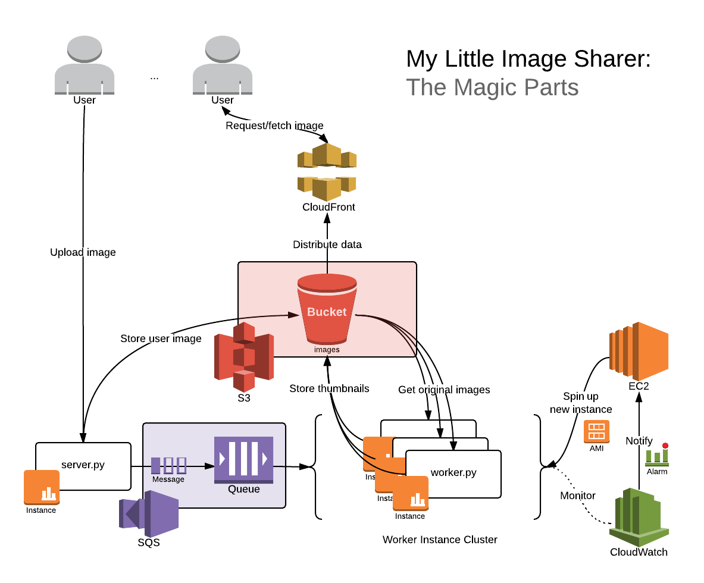

Assignment 2
Next version
- Teach them to use long-poll in SQS—keeps them in the free tier of SQS ops
- Revised name of “server”—potentially confusing, overdetermined definition. Perhaps “leader”?
- Would fit into latency discussion better if workers returned completions to server, server returned final completion to user.
My Little Image Sharer: Clouds Are Magic

Due: Sunday, February 2nd, 23:59.
Submissions: CourSys
Boilerplate: GitHub
TEST TOOL: RUN THIS
Overview
TNI (Ted n Izaak) has hired you to finish their half-completed project: My Little Image Sharer (you guessed it: an image sharing service). The previous developers were terrible and fired; so they brought you on board and you’ve been left with partially-completed server and worker services. Users of My Little Image Sharer start by uploading an image to the server service (the only publicly accessible component). Upon receiving said image, the server (i) saves the image in S3, and (ii) sends a notification to the worker service via SQS so the worker can do further processing. When the worker receives an image, it computes several scaled thumbnails and saves each of them in S3. The worker service is asynchronous: The server simply sends the image and does not wait for the worker to complete. This means the user has no guarantee on how quickly the scaled versions will be retrievable from S3 after the original image is available on S3. In the terms we will consider Friday January 24, the latency of the scaled images is unbounded.
Part 1: Into the Clouds
Deliverables
- Performance analysis (via our load testing tool)
- Source code (uploaded zip or link to GitHub repository)
- server.py
- worker.py
- etc.
Grading (/13)
- Performance results (via our load testing tool)
- POST / returns HTTP 200 OK + URLs for single request /1
- GET all image URLS respond HTTP 200 OK + image data within 30s /2
- server.py
- generate_id() /2
- notify_worker() /4
- worker.py
- main() /4
Overview
The server is mostly complete, being able to receive images and store them into S3. The worker has only basic image scaling functionality implemented. None of the communication exchange between worker and server was written. To complete the service, you must:
- modify the server to communicate the arrival of a new image by putting a message in the work queue, and
- modify the worker to listen for that message; when the worker receives the message, it needs to retrieve the existing image that was uploaded by the server, resize it to the requested thumbnail sizes, and then save those thumbnails to S3.
Part 2: And Over the Rainbow
Deliverables
- Performance analysis (via our load testing tool)
- Screenshots of your AutoScaling group including
- Details
- Scaling History
- Scaling Policies
Grading (/7)
- Performance results
- GET all image URLS behavior is responsive /3
- Screenshots of your AutoScaling group including
- Details /1
- Scaling History /1
- Scaling Policies /2
Overview
Unfortunately, simply completing the code for My Little Image Sharer won’t be enough to save it from failing when hordes of emotionally-underdeveloped cloud system developers suddenly upload or view all the images of love, tolerance and distributed systems they’ve been waiting to share with the world. TNI needs to have a service that scales (meets its SLA even as the number of users grows quickly). There are (at least) two scaling issues present: the worker service could become under-provisioned (too many images, not enough resizing power) and the data delivery network could become under-provisioned (too many requests, not enough network bandwidth).
To ensure that there is enough resizing power available, you need to be able to spin up more workers as necessary. When to spin up new workers is left to your discretion, and you have many options to choose from in CloudWatch. This magic can be achieved by: * creating an AMI with the worker embedded into it, * and configuring CloudWatch to automatically spin up new instances of that AMI.
Part 3: But wait… There’s More!
Deliverables
- Overview (txt/md/doc/pdf)
Grading (/4)
- Overview
- Shows how at least one implementation choice affects scalability/reliability /1
- Suggests at least one scalability/reliability improvement that could be made /1
- Explains how the application uses at least one cloud infrastructure component /1
- Contains one other thoughtful comment /1
Overview
Even after you’ve gotten through the blood, sweat and tears, TNI being the horribly devlish company it is, wants a brief overview of what your app promises to deliver (and just as importantly what it doesn’t) so they can immediately sell it off and become millionaires. Some thought-provoking questions you might wish to considering answering or thinking about are as follows:
- How are these terms relevant or related to your app:
- data center
- virtual machine
- virtualization
- provisioning
- overprovisioned
- underprovisioned
- elastic computing
- utilization
- throughput
- latency
- API
- What does the Amazon SLA mean you can expect from your app?
- How does or doesn’t your ID generation algorithm prevent conflicts?
- What platform-level, cluster-level, and application-level software is being used in your app?
- How does your app scale?
- How might it fail? (Hint: server.py)
- How could you change it to scale better?
- What other existing apps might use a similar platform? Why? (Hint: Video.)
- What metric did you chose for your AutoScaler/CloudWatch alarm? Why?
- If a worker fails while encoding an image, what happens? Can your system recover?
Architectural Overview

Errata
To ensure that there is enough network bandwidth available, you need to have your images available from a lot of different network locations. This can be achieved by using a content distribution network to host your images.
- setup a CloudFront distribution to serve data from your S3 bucket,
- and update the server to return CloudFront URLs instead of S3 ones.
Important: TNI has intentionally omitted documentation in several areas both to give you experience navigating through the documentation and help sources (e.g. how do I make an AMI? how do I get a Python script to start at boot? how do I use CloudWatch?) and to encourage exploration, discussion and collaboration. Feel free to share your knowledge with others by posting your issues or resources on our friendly neighbourhood subreddit or swinging by IRC.
Recommendations
- Focus on core requirements first
- Use “curl” to write simple tests
- Start today
- Ask lots of questions
- Share knowledge
Helpful Knowledge
Curling for Fun & Profit
The “curl” command is useful for sending HTTP requests much like your browser does, but from the command line. Sane OS (i.e. Linux and Mac OS X) users have curl installed by default; Windows users however must download it. A description of all the options can be found on the man page.
You can use it to test your image uploading service by running the command:
bash
curl -i -XPOST -F"image=@/path/to/img.jpg" http://ec2-url.com
On Windows, if you get an error complaining about missing DLLs (e.g. libssh2.dll), make sure you’ve installed the most barebones version of curl without support for extra fancy things like ssh. The download link above is a reference to such a barebones version.
If anything goes wrong you can enable more verbose output by adding “-v” to the list of flags to see what’s going on. Be sure to check the HTTP status code that looks something like “HTTP/1.1 200 OK”. Some common errors you might encounter:
- Unable to connect; either your server.py file is not running on your instance, your instance is not turned on, or your instace’s security settings are not configured properly.
- HTTP 403: Forbidden; you’re not allowed to access that resource; if it’s your bucket make sure you’ve made your bucket public.
- HTTP 404: Not found; you’re trying to access a resource that doesn’t exist (e.g. /dgertfg)
- HTTP 405: Method not allowed; you’re trying to use a method (e.g. GET/POST/PUT/etc.) on a resource (e.g. /) that doesn’t support it.
- HTTP 500: Internal server error; your Python code threw an exception somewhere; check your server console for details.
A full list of HTTP status codes and their meanings can be found here.
Staying Alive
Ubuntu uses a system called “upstart” to manage most of its system processes. Starting a continuously running Python process using uptstart is described here.
Remember that if you start your server inside an ssh session and you then close the ssh session that server is terminated unless either the system is managing the process through something like upstart or you’re using a smarter terminal management system such as tmux (an overview for which can be found here).
Opening the Gates
By default your EC2 instance only allows incoming traffic on port 22. To make your server.py (which runs on port 80), accessable to the rest of the world you need to add a rule allowing incoming traffic on port 80. Instructions for doing so can be found here.
By default your S3 bucket can only be accessed by you. In order to make it world-readable you need to apply a policy to all objects in your bucket. Instructions for doing so can be found here.
Ubuntu Setup Instructions
In order to prepare a vanilla Ubuntu install for this application you need to install a couple of things. Simply run the following commands to make sure you’ve got everything:
sudo apt-get install git python-dev python-pip libjpeg-dev libpng-dev
sudo pip install --upgrade boto pillow bottle
sudo python server.py